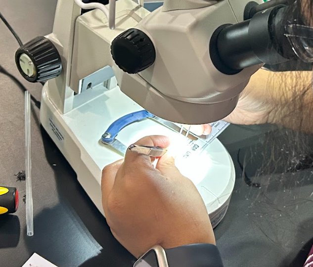
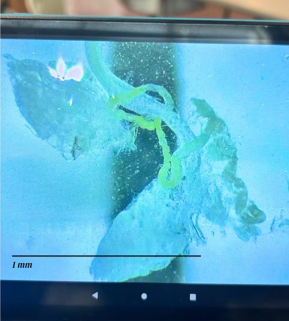
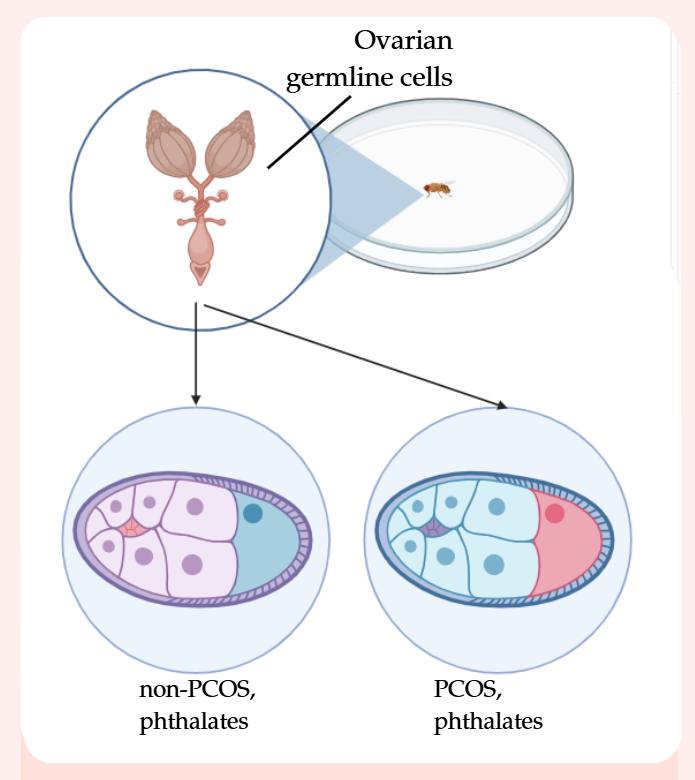

Phthalates are plasticizers and endocrine-disrupting chemicals characterized by hormonal dysfunction. Polyvinyl chloride (PVC) is one of the most widespread phthalate-containing plastics. Polyethylene terephthalate (PET) does not contain plasticizers but shows negative effects within male reproductive health; however, very few studies have been conducted regarding its effects on patients with polycystic-ovarian syndrome (PCOS): a hormonal disorder affecting 6-15% of reproductive-aged females. An accurate comparison of PET and PVC in vivo is necessary to observe the possible ovarian detriments their consumption.
As classic phthalates are historically known for causing endocrine disruptions and PET / terephthalate-plastics are used as their replacements, there may have been a correlation in how they affected the endocrine system. Drosophila melanogaster was chosen as a model organism due to how similar its reproductive structures are to that of humans, with somatic and germline stem cells. There is a research gap as well, in our understanding of women with PCOS: this includes how their disorder comes to be, how it may carry through generations, and how epigenetics may influence it. This experiment explored the intersection of these fields.


The results showed that a novel method of exhibiting PCOS in a non-mammalian model organism was attainable with testosterone administration to cause follicular arrest. The presence of both PVC and PET also caused noticeable follicular arrest, determining that they were detrimental. A future study may choose to increase sample count; count ovarioles; or even use dihydrotestosterone. A new project may also look at ecdysone, DILPs, and germline stem cells to determine levels of insulin resistance.